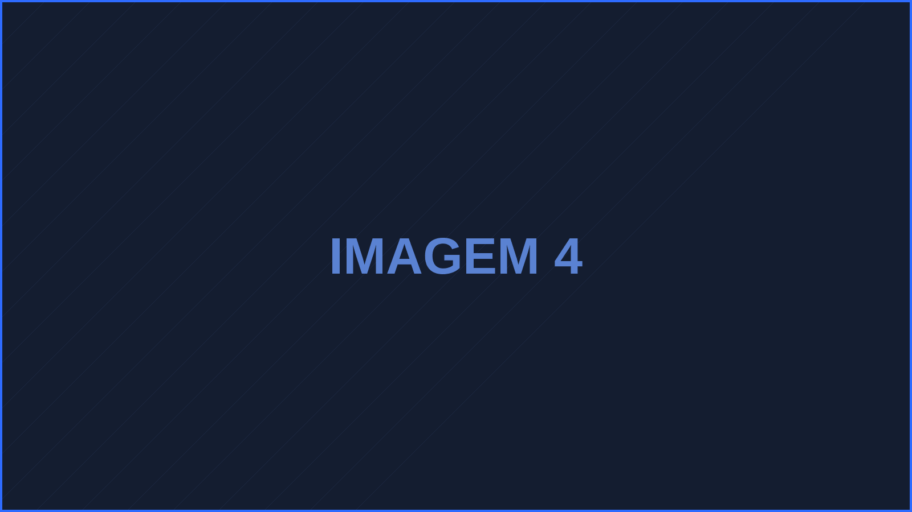
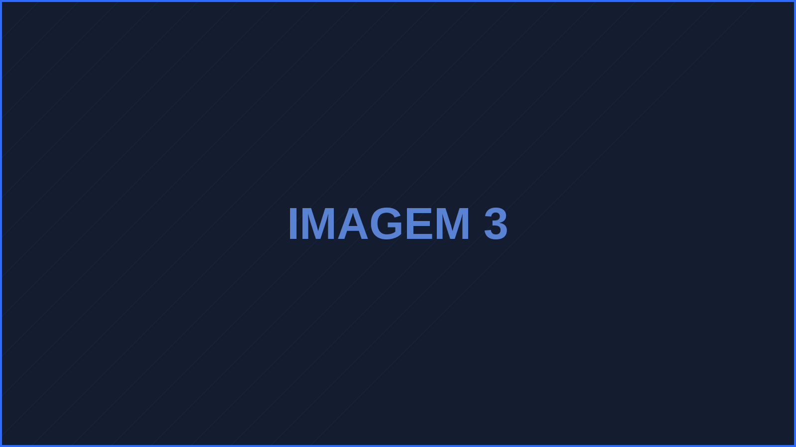
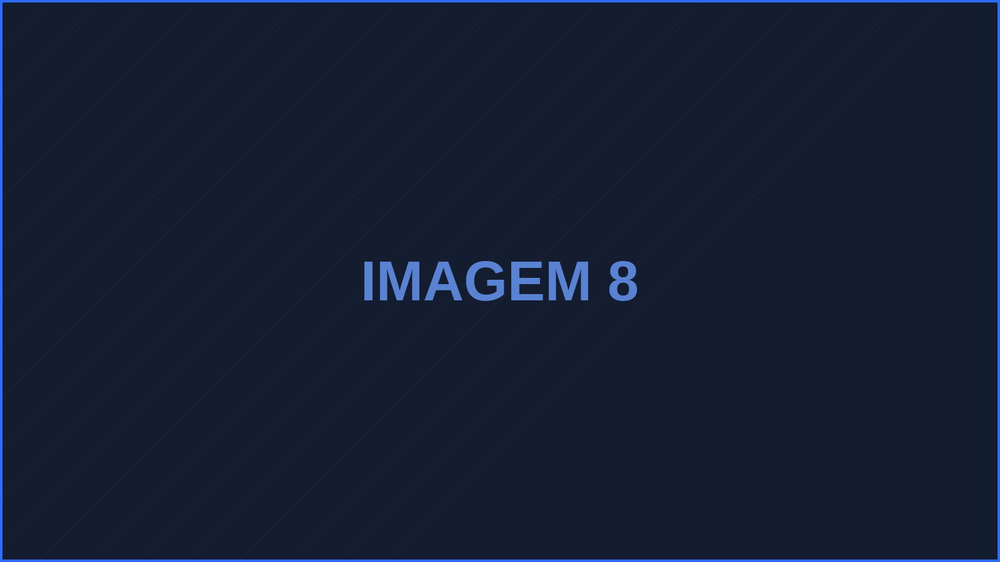
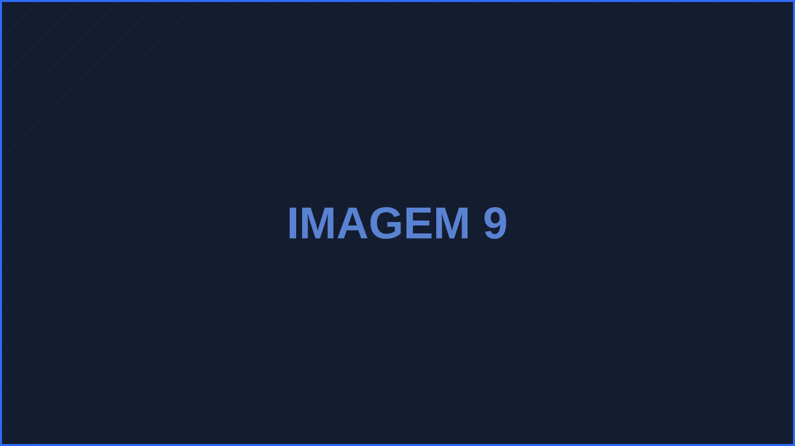
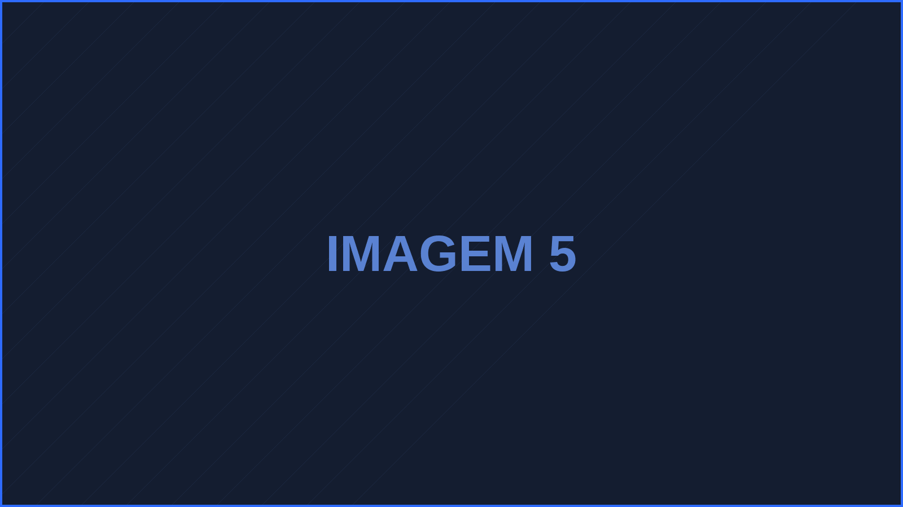
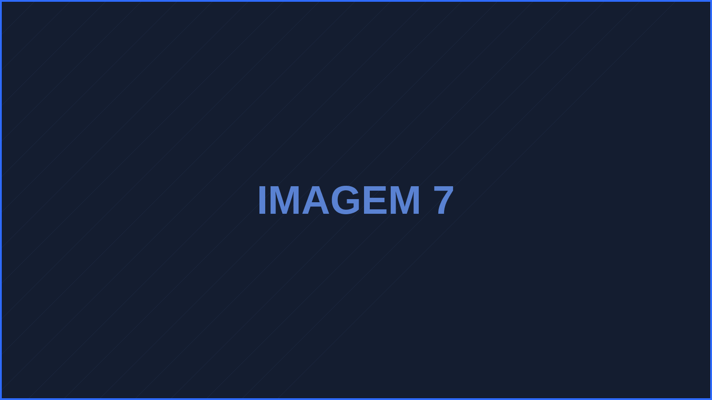

O problema que ninguém te mostrou
O gerenciador de anúncios não sabe quem realmente comprou. Ele só sabe quem o pixel achou que comprou.
Todo gestor de tráfego aprende a otimizar olhando pro Gerenciador de Anúncios: CPL, CTR, conversões. O problema é que o pixel atribui resultado de forma incompleta — ele duplica conversão, erra atribuição entre dispositivos, não sabe diferenciar um lead curioso de um MQL de verdade, e principalmente: ele não sabe quem virou venda depois do checkout.
Repare nisso:

Dois conjuntos de anúncio, público parecido, criativo parecido. No gerenciador, os dois “performam bem”. Na vida real, um custa mais que o dobro pra gerar a mesma venda. Se você otimiza só pelo que o gerenciador mostra, você está cortando o conjunto errado e escalando o errado — e seu cliente (ou você mesmo) está pagando essa conta.
Quero Parar de Otimizar no EscuroO dia a dia que ninguém fala em público
Se você atende mais de um cliente, você já viveu isso:
- Você fecha o mês e precisa montar relatório manual pra cada cliente — copiando número de planilha em planilha, torcendo pra não errar nenhuma célula.
- O cliente pergunta “por que o CAC subiu?” e você não tem uma resposta com dado real — só um “acho que foi o criativo X”.
- Você otimiza uma campanha por CPL baixo, ela “parece” estar indo bem, mas no fim do mês o faturamento do cliente não bateu.
- Você sabe que tem dinheiro sendo desperdiçado em algum conjunto, mas não sabe qual — porque o gerenciador não separa MQL de curioso, nem venda de lead frio.
- Você quer escalar a operação, pegar mais clientes, se pejotizar de vez — mas vive apagando incêndio de relatório em vez de vender e otimizar.
Você não precisa de mais uma ferramenta bonita de dashboard. Você precisa de uma estrutura de dados que te diz a verdade — pra você tomar decisão com segurança e provar resultado pro cliente sem enrolação.
Quero Sair Dessa RotinaApresentação do método
Método ODR — Otimização com Dados Reais
O ODR é um treinamento prático que te ensina a construir sua própria estrutura de rastreamento — nomenclaturas, UTMs, planilha central, automações e dashboards — pra cruzar os dados do gerenciador com os dados reais do seu negócio: MQL, check-in e venda confirmada.
Na prática, você constrói um sistema assim:

Isso não é um dashboard genérico de Looker/Data Studio que só bonifica número de conversão do pixel. É uma estrutura que conecta o investimento em mídia ao resultado real do negócio — check-in que aconteceu, venda que caiu na conta.
Com isso, você responde perguntas que o gerenciador nunca responde com segurança:
- Qual anúncio trouxe mais MQL (não só lead)?
- Qual campanha gerou mais check-in?
- Qual é o CAC e o ROAS real — não o estimado?
- Onde está o gargalo de verdade no funil?
Estrutura do treinamento
O que você vai aprender
O ODR é dividido em 7 módulos, na ordem exata que você precisa implementar pra estrutura funcionar:

- 1Introdução — a lógica por trás da Otimização com Dados Reais
- 2Planilhas Centrais — a base de tudo: onde os dados reais do negócio se conectam ao tráfego
- 3Padrões de Nomenclatura — como organizar campanha, conjunto e anúncio pra rastrear sem bagunça
- 4Configuração de UTMs — captura correta de origem, sem furo
- 5Automações — pra parar de fazer isso tudo manualmente
- 6Data Studio — dashboards visuais com CPL, custo por MQL, CAC e ROAS real
- 7Dashboards com IA — como plugar Inteligência Artificial pra ler seu funil e te dizer o que cortar, manter, otimizar e escalar
E o conteúdo não é teoria solta — são aulas gravadas mostrando a estrutura sendo construída na prática:

Por que isso não é “só mais um dashboard”
A IA não otimiza sozinha. Ela te diz onde olhar primeiro.
Muita gente já usa planilha ou Data Studio. O diferencial do ODR não é visualizar métrica bonita — é conectar o anúncio ao resultado real e transformar isso em decisão. E é aí que entra a parte que ninguém mais ensina: usar IA pra ler o funil inteiro e te devolver um diagnóstico direto, sem você precisar garimpar linha por linha de planilha.
Veja como fica na prática:


A decisão final e a execução continuam sendo suas — a IA não substitui seu trabalho, ela corta o tempo que você levaria pra chegar na mesma conclusão sozinho, olhando aba por aba.
Quero Esse Nível de Clareza no Meu FunilAntes de você entrar
Pra quem é (e pra quem não é)
O Método ODR é indicado para:
- Gestores de tráfego que atendem mais de um cliente e precisam de relatórios confiáveis pra cada operação
- Agências que querem provar resultado com dado real, não estimativa de pixel
- Infoprodutores que querem entender de onde vêm os melhores leads e vendas
- Quem trabalha com VSL, high ticket, lançamento ou qualquer funil com etapa de qualificação (MQL, check-in)
Não é indicado para:
- Quem procura só “estratégia de criativo” ou “anúncio que converte sozinho”
- Quem quer uma ferramenta pronta que funciona sem nenhuma implementação — o ODR exige que você configure a estrutura seguindo as aulas
- Quem nunca trabalhou com campanha, lead ou métrica de tráfego (não precisa ser avançado, mas precisa ter o básico)
Bônus
Além dos 7 módulos, você recebe modelos prontos pra adaptar direto na sua operação:
- Modelos de planilha para lançamento clássico, lançamento pago, VSL e high ticket
- Modelos de relatório em Data Studio
- Modelos de relatório com IA (via GitHub)
- Planilha geradora de UTM
- Planilha geradora de nomenclatura de campanhas, conjuntos e anúncios
- Aula específica de como ligar uma IA pra analisar seu funil e gerar sugestões automaticamente
Você não parte do zero — parte da mesma estrutura usada em operações reais.
Quero Todos os BônusOferta
De R$697 por
R$397
100 vagas nesse valor. Depois disso, o preço sobe pra R$697.
- À vista por R$397 ou em até 12x de R$41,06
- Acesso a todos os 7 módulos + materiais complementares
- Todos os bônus incluídos
- Garantia incondicional de 7 dias
Pagamento processado pela Kiwify · Acesso imediato após a confirmação
Garantia
Risco zero pra você testar
Você tem 7 dias pra acessar o conteúdo, testar a estrutura e decidir se faz sentido pra sua operação. Se não fizer, é só pedir reembolso — sem burocracia.
Quero Testar Sem RiscoFAQ
Perguntas frequentes
Sim. O método não substitui o pixel — ele complementa os dados do gerenciador com MQLs, check-ins e vendas reais identificadas por UTM.
Não é necessário conhecimento avançado. Você recebe modelos e scripts prontos, só precisa seguir as aulas e configurar.
Sim. A estrutura rastreia a origem real dos resultados através de nomenclatura, UTM e dados do próprio negócio.
O diferencial não é visualizar métrica — é conectar o anúncio ao resultado real e transformar isso em decisão de otimização.
Sim, desde que existam dados rastreáveis. Quanto maior o volume, mais consistente a análise.
Não. Ela analisa os dados e aponta oportunidades. A decisão e a execução continuam sendo suas.
Não existe garantia de faturamento — isso depende da sua oferta, tráfego e execução. O método entrega a estrutura de dados pra você decidir com mais segurança.
Última chamada
As 100 vagas por R$397 não vão durar
Depois disso, o valor sobe pra R$697. Se você já sente na pele o tempo perdido com relatório manual e a insegurança de otimizar campanha sem saber se o dado é real, essa é a hora.
Quero Minha Vaga Agora por R$397